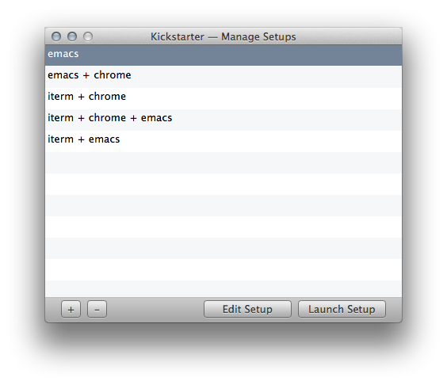

The Problem
So you need to start working. Maybe you're a web developer. You launch a browser, launch your terminal emulator, and launch an editor. And when you need to start working again, you do this all over again. And it gets tedious.The Solution
This is an extremely repetitive process, which means it can be automated, and that's what Kickstarter does. Launch apps once, capture a 'setup' with Kickstarter, and launch that setup whenever you need to start working. You can even run shell commands with the shell of your choice.
Managing Setups
Managing setups is as easy as creating them. Select the 'Manage Setups' menu item from the Kickstarter menu, and you'll see a window.
Click on the '+' button at the bottom-left corner to capture a new setup. Click on the '-' button next to the '+' button to delete the currently selected setup. Click on 'Launch Setup' to launch the selected setup, 'Edit Setup' to edit it.
You can also launch setups from the Kickstarter menu. Launch a setup with Setups > setup-name.
Editing A Setup
When you click on the 'Edit Setup' button on the 'Manage Setups' window, you should see a window titled 'Edit Setup'.From here, you can choose what apps to launch (use the '+' and '-' buttons to add/remove). You can select a shell, and type in some simple shell commands to run. When you want to save your shell script options, click on 'Save'.
Shell scripts that you run from here won't run in a new Terminal window. Instead, they run in the background. So, if you want to do something like start a new Terminal window and run
You can also tell Kickstarter to run shell scripts in a new Terminal window by changing Kickstarter's preferences.
vim in it, do
open -a Terminal /path/to/vimwhich works for pretty much everything else as well.
You can also tell Kickstarter to run shell scripts in a new Terminal window by changing Kickstarter's preferences.
Using The Kickstarter Panel
The Kickstarter Panel is a keyboard launcher that launches your Kickstarter setups.You can display the Kickstarter Panel with a global hotkey that can be changed in Kickstarter's preferences. You can also enable fuzzy searching, which allows you to skip intermediate characters while searching for setups (for example, 'eac' will match 'Emacs').